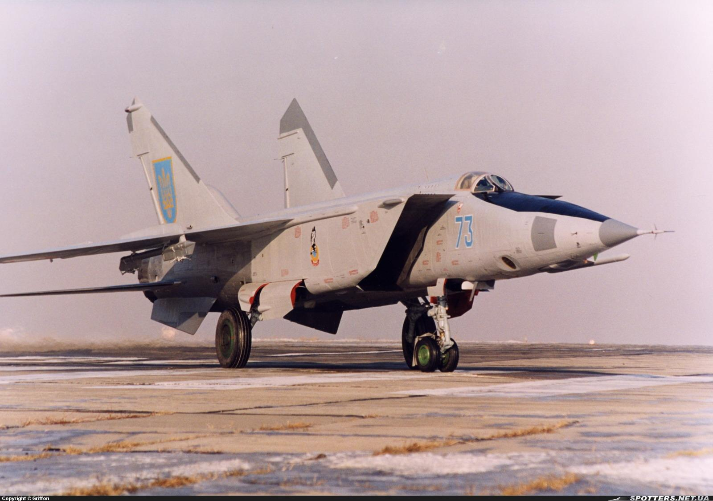
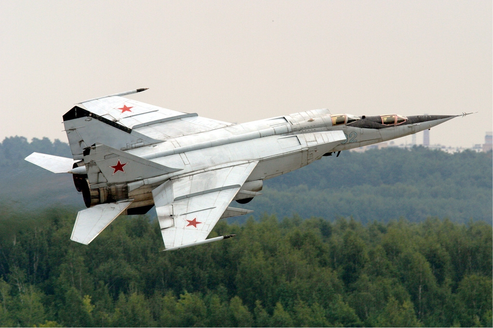
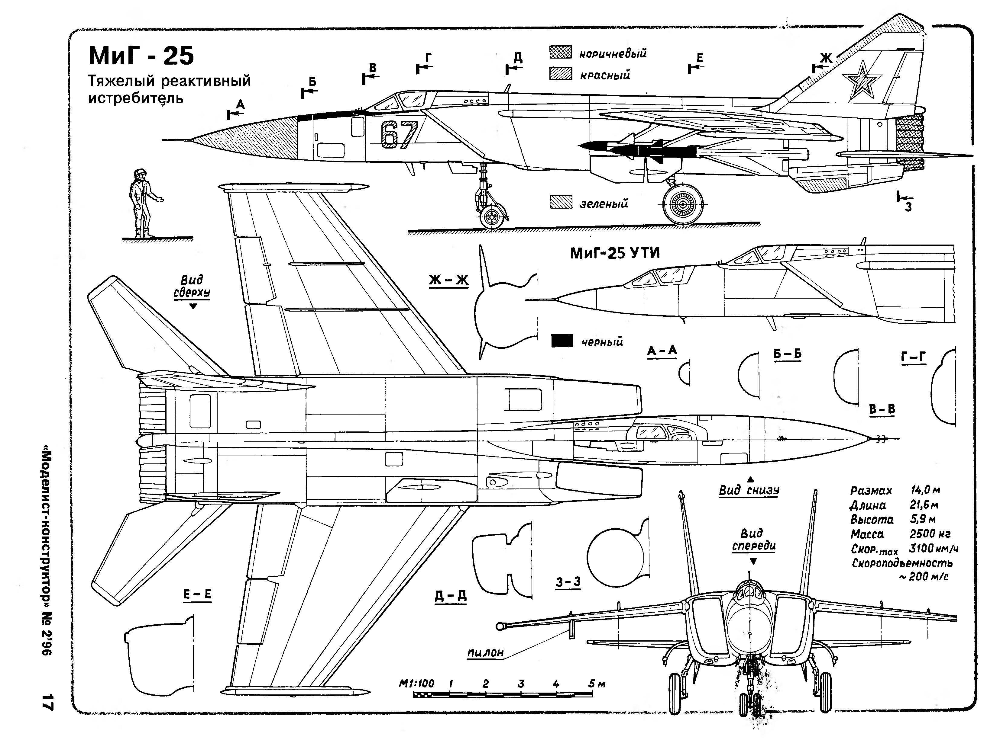
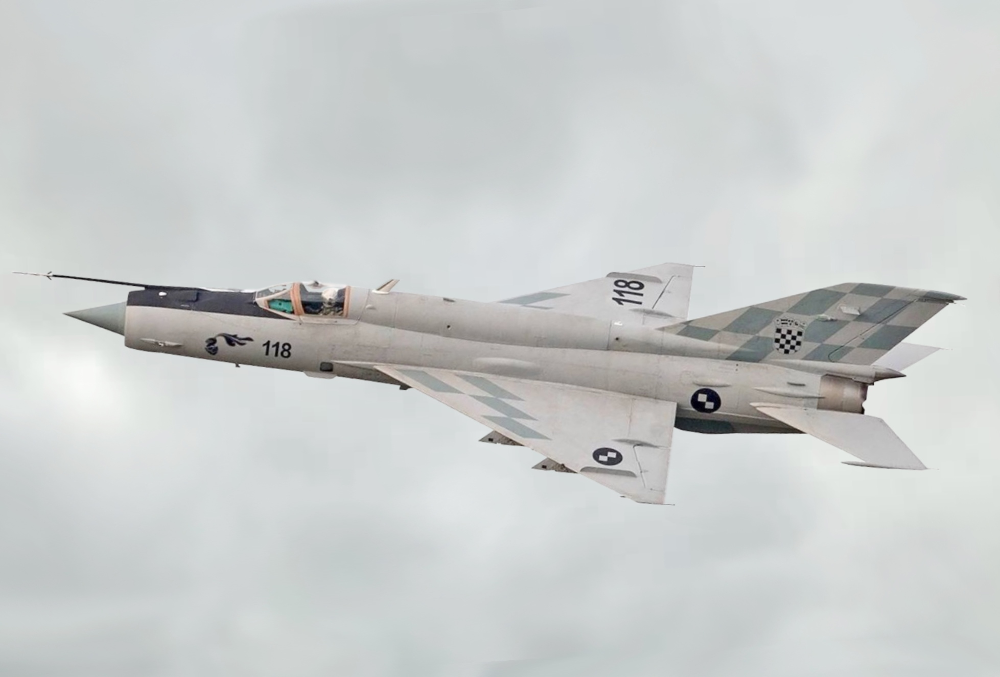
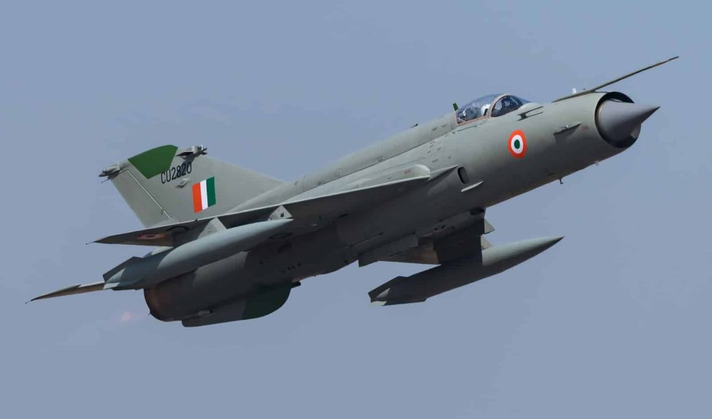
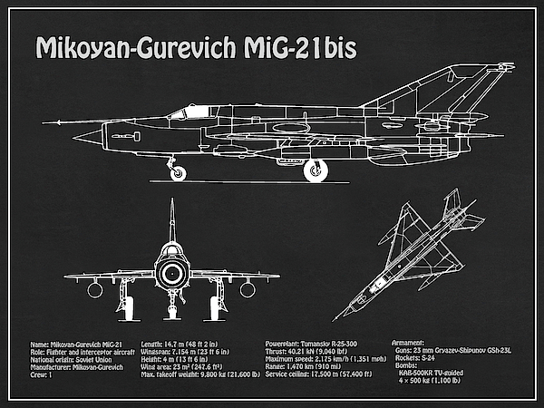
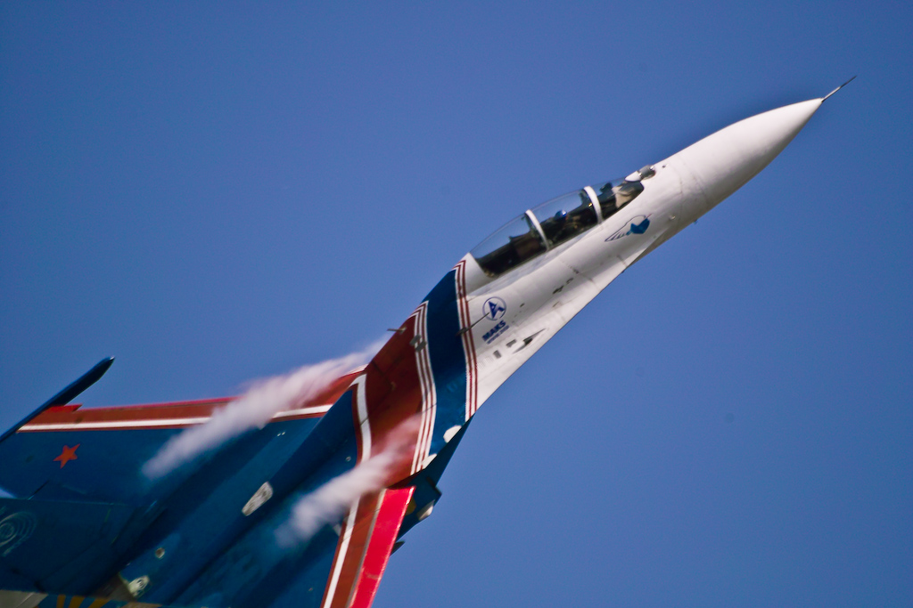
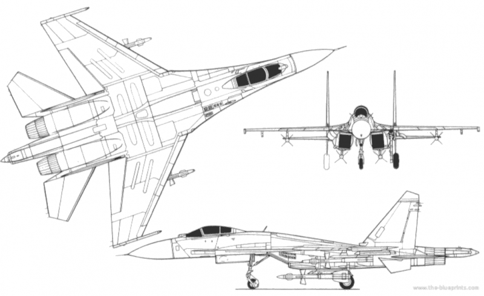
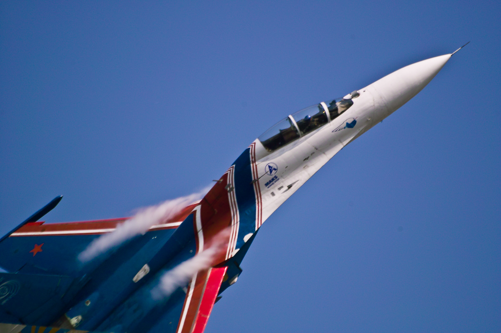
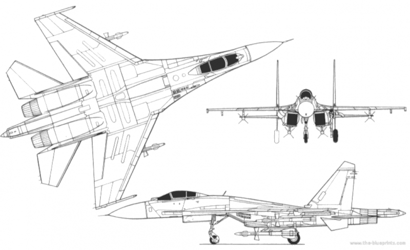

Радянські літаки
МіГ-25
МіГ-25 — радянський висотний винищувач-перехоплювач. Розроблений в 1960-х роках, він був здатний розвивати швидкість до 3 Махів і використовувався для перехоплення швидкісних цілей.



| Довжина | Розмах крил | Швидкість | Маса | Двигуни |
|---|---|---|---|---|
| 22,3 м | 14,0 м | 3000 км/год | 24 000 кг | 2 × ТРДФ |
МіГ-21
МіГ-21 — радянський винищувач, який відіграв важливу роль в повітряній обороні протягом багатьох десятиліть. Завдяки своїй простоті, надійності та ефективності, він став одним з наймасовіших бойових літаків у світі.



| Довжина | Розмах крил | Швидкість | Маса | Двигуни |
|---|---|---|---|---|
| 15,8 м | 7,15 м | 2175 км/год | 8 725 кг | 1 × ТРД |
Су-27
Су-27 — один з найвідоміших радянських винищувачів, який досі знаходиться на озброєнні багатьох країн. Він відомий своїми відмінними маневреними характеристиками та високою ефективністю в бою.
 



| Довжина | Розмах крил | Швидкість | Маса | Двигуни |
|---|---|---|---|---|
| 21,9 м | 14,7 м | 2500 км/год | 16 380 кг | 2 × ТРД |